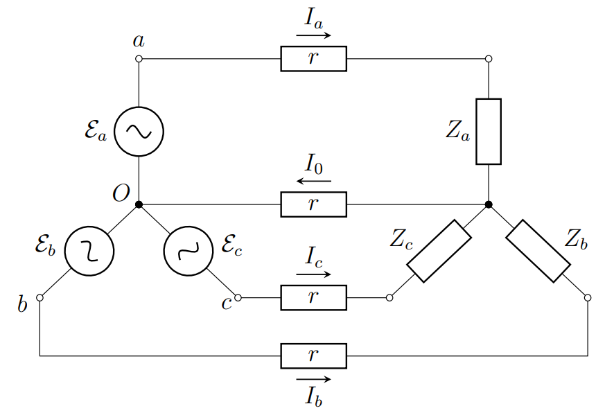
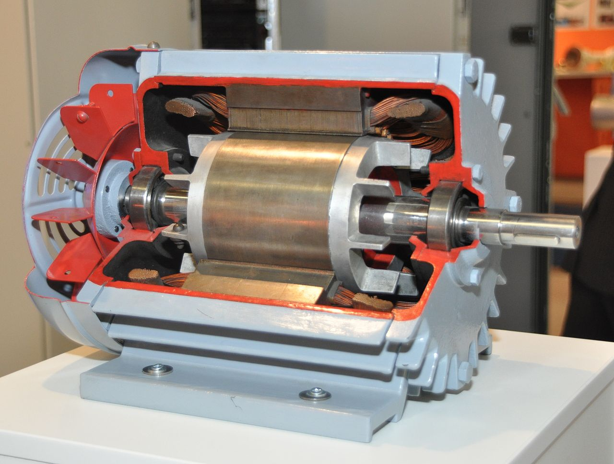
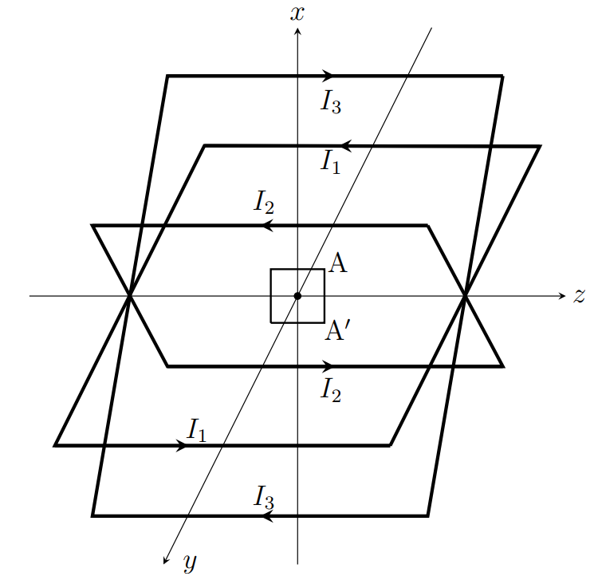
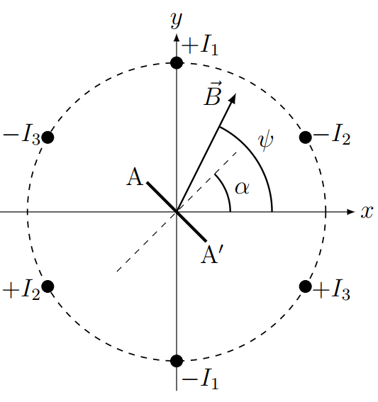

X23 (2023) — English translation
Along with conventional alternating current, which is a single sinusoidal oscillation, technology often uses the so-called multiphase (and in particular three-phase) current. Such a current is a superposition of several oscillations of the same frequency, shifted relative to each other in phase. The use of three-phase current allows energy to be transmitted over long distances with less losses. In addition, three-phase current is more convenient to use to power electric motors. By combining phase-shifted oscillations with each other, it is possible to achieve constant power on a load (for example, on a motor or heating device).
A three-phase current generator can be modeled as three alternating current generators of the same frequency, the voltages of which are shifted relative to each other in phase by a third of a period. The wires connected to the terminals of the generators ($a$, $b$, $c$) are called linear, and the wire connected to the center of the star ($O$) is called zero (or neutral). The voltage between the two terminals of the generators to which the linear wires are connected is called linear. The voltages between the center of the star and the three terminals are called phase voltages, they are equal to $$ \mathcal{E}_a = \mathcal{E}_0 \cos \omega t, \; \mathcal{E}_b = \mathcal{E}_0 \cos \left(\omega t - \frac{2\pi}{3}\right), \; \mathcal{E}_c = \mathcal{E}_0 \cos \left(\omega t - \frac{4 \pi}{3}\right). $$ В качестве нагрузки для генератора будем использовать 3 элемента $Z_a$, $Z_b$, $Z_c$, соединенных в виде звезды. Они соединяются с генератором проводами, сопротивление каждого из которых равно $r$. The internal resistance of generators does not need to be taken into account.

The resistance of each of the connecting wires connecting the generator and the load is $r =5~\text{кОм}$, the voltage amplitude of each of the generators is $\mathcal{E}_0 = 310~\text{В}$, and the voltage frequency is $f = 50~\text{Гц}$.
In this part we will study one of the most common AC motor designs. The motor consists of two parts: a stationary stator and a rotor that can rotate. The stator is located around the rotor and contains several current-carrying coils that create an alternating magnetic field. This field creates induced currents in the rotor, which are acted upon by torque. This moment makes the rotor rotate.

We will use the following engine model. The stator consists of three square frames with side $a$. The frames are rotated by $120^\circ$ relative to each other and a three-phase voltage is applied to them, so that the currents in the frames have the form: $$ I_1 = I_0 \cos \omega t,\; I_2 = I_0 \cos \left( \omega t - \frac{2 \pi }{3}\right), \; I_3 = I_0 \cos \left( \omega t - \frac{4\pi}{3}\right). $$ В центре квадратов находится маленькая прямоугольная рамка площади $S$ (линейные размеры рамки много меньше стороны квадрата $a$), которая может свободно вращаться вокруг горизонтальной оси $z$, passing through the centers of all frames.
The relative position of the frames, the directions of the currents in them and the directions of the coordinate axes are shown in the figure. The second figure shows a section of the frames by plane $xy$, as it looks when viewed from the side of positive $z$. Positive signs of currents (for example $+I_1$) correspond to currents that flow towards us.


Source: https://pho.rs/p/3163